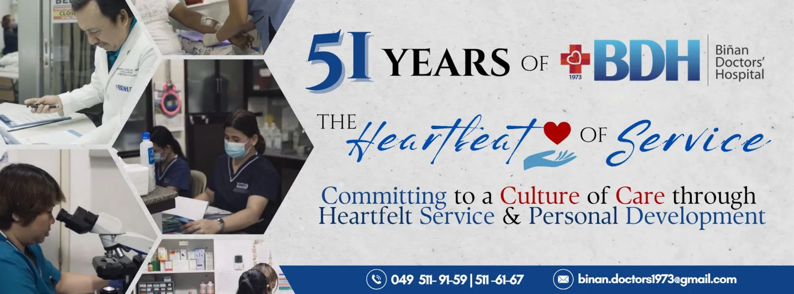

We make sure that you are tended.

We envision to be the premiere hospital in the 1st District of Laguna providing health care.
It is our mission to deliver affordable and accessible quality health care services through caring and competent health care professionals.
The Binan Doctors’ Hospital, Inc. was established by several incorporators in June 1973 with the mission of service to the community and training of nurses and other paramedical personnel. The hospital was a brainchild of Ms. Pura Limaco and sister Dr. Luisa Limaco-De Leon. Having formally inaugurated in August 4, 1974, the hospital were under the leadership of able and brilliant men and women whose dedication and love for service has made the hospital flourish into 75 bed capacity tertiary hospital. The hospital now caters to the health care needs of the community of Binan, Laguna and the neighboring towns of San Pedro, Sta. Rosa, Cabuyao, and Carmona, Cavite.
We combine the state of the art technology, innovation, commitment, and teamwork for a well-served community. We believe that the right combination of skills and values will make us different in medical field. We intend to give the best quality of healthcare with a type of serving with compassionate care, empathy, and a heart that does not feel exhausted to serve.
Biñan Doctors' Hospital is now on its 51st year of operation. It was established with the mission of service and continues to serve with quality health care, affordable fees, and through its people with an unending love for their chosen field. We ensure to put God first and in the center of our services. With our continuous thrive to attain excellent level in rendering quality and trustworthy health care, we continue to grasp for growth and knowledge, to guarantee our patient's safety and well-being, our doctors are carefully screened and credentialed to ensure the highest quality of care. Here at Biñan Doctors' Hospital, we give our patients a thousand reasons to live glowing and have a healthy lifestyle. We are a 75-bed Level 2 private hospital accredited by the Department of Health and PhilHealth. Committed to serving the community, it provides comprehensive healthcare services, including Emergency Care, Internal Medicine, General Surgery, Pediatrics, Obstetrics-Gynecology, Radiology, Pathology/Laboratory, Family Medicine, Industrial Medicine, Outpatient Services, Psychiatry, Cardiology, Audiology, Rehabilitation Medicine, Nutrition/Dietary, Dermatology, Dental Care, Pharmacy, and Medical Records. Over its 50 years of service, the hospital has expanded its pharmacy, acquired a CT scan, and enhanced its ultrasound capabilities to better serve its patients. Payment can never aggravate you because you can either pay in cash or use your hassle free Credit Cards ; we also accept manager’s check payable to our institution. Or either way, we accept a wide range of Accredited HMO/Insurance companies.